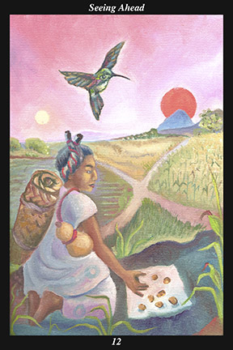

 | IMAGEA female warrior stops at a crossroads, determining which road she should take. The road to the right leads into mountains, behind which stands the sun. The road to the left crosses a level plain and leads toward the moon. The warrior, who carries all she needs for a long trip, kneels and consults the oracle by tossing kernels of corn. The oracle answers her question with a hummingbird, who points to the road toward the sun. |
INTERPRETATION
This hexagram depicts the window of opportunity opening. The female warrior symbolizes the patience and acceptance to rest until the time comes to move. That she carries all she needs means that you are self-reliant and well-prepared for the journey ahead. That she pauses at a crossroads means that you stop to assess your situation and make plans for your next course of action even if doing so reawakens old fears, injuries, or resentments. The road to the sun beyond the mountain symbolizes a period of creativity that can only be reached by overcoming obstacles and difficulties. The road to the moon across the open plains is a symbol of future contentment and fulfillment that is within easy grasp. Consulting the oracle means that you trust the helping spirits to guide you toward your destiny. The hummingbird, who drinks only the nectar of beautiful flowers and can fly in any direction at will, is a symbol of the willpower of a great warrior who returns from the house of the sun to encourage and inspire the living. Taken together, these symbols mean that your connection to the spirit world is strong, your vision is clear, your decisions are firm, and your actions inspired.
ACTION
The feminine half of the spirit warrior pauses in her journey, taking the time to question her destiny about the road ahead: by stepping outside the flow of events and listening to the spirit of your lifetime, you ensure that all your decisions are in accord with the will of your guide. This is a time for stepping back from the immediacy of your emotions and being receptive to deeper, more sublime, urges welling up from the innermost sanctuary of need. Keeping in mind your dearest dreams and aspirations for this life, ask of the spirit helpers guidance in choosing the road that will lead you to that destination. From such a vantage point, survey the terrain ahead, noting in particular the landmarks by which you can keep your bearings and mark your progress. Lay out your plans now and map out your overall strategy for achieving your goal. Reminding yourself constantly that matters will not be this clear again for some time, take advantage of the time to project your will as far forward as possible. In this way, you arrive at decisions that fulfill a need greater than your own, decisions that multiply the
benefit you receive into the lives of untold others.
INTENT
Sometimes the clear and easy path is the right road but this is not such a time. Your road leads beyond a steep mountain range that can be surmounted only by overcoming both inner and outer obstacles. But it is the radiance of solar light and its life-giving energy that calls you forward—it is the higher purpose given you by the creative forces that asserts itself anew. Dedicate yourself to reaching your life’s destiny and you will establish the overall direction for the rest of your life. Don’t shy away from hard work and don’t settle for anything less than seeing matters through to the end. Be receptive to the presence of the helping spirits, for they bring the masculine half of the spirit warrior to bear on the moment: by being open to the insight and understanding of the spirit of the corn and to the courage and willpower of the spirit of the hummingbird, you will be filled with the wisdom and strength to surmount every obstacle between you and your heart’s desire.
SUMMARY: Set aside your hopes and fears, ignore the hopes and fears of others. Cultivate a more objective frame of mind, make the most of this time of clarity and insight. You are particularly attuned to the momentum of how things are developing at this time. Once you determine the proper course, do not hesitate to devise your plan of action and begin putting it into effect. Accept the challenge.
THE LINE CHANGES
1° If you allow being in a subordinate position to frustrate you, you will offend others and cut off aid you might otherwise receive. If you want recognition so badly, then this humbling is precisely what you need. Honor those around you and do not resent their air of superiority—time is your ally.
2° Occupying a lowly position can be a boon, for the wealthy and the powerful cannot trust anyone. Having little, you have no reason to distrust—these are relationships you will remember forever. With effort, you can be the equal of anyone in character and learning—follow your personal path.
3° Though the situation does not seem favorable, it is best to do nothing to change it—though you do not seem to be appreciated, it is best not to alter your demeanor. Circumstances will eventually bring your talents to the forefront. Continue honing your skills and contributing wherever asked.
4° Experience shows that it is often the second choice who succeeds when the first choice fails to work out. Tolerate no false pride or opportunism in yourself—respond with genuine gratitude now that your chance has come. You succeed now because you did not jump at lesser opportunities earlier.
5° There is nobility sometimes when figureheads fail. This is because it was their role all along to legitimize the transition from the old to the new and never to actually accomplish the task they ostensibly accepted. Play out your role with dignity and integrity—this is a joyous destiny.
6° When the two halves fly apart, the strong half sacrifices direct thought and action even as the adaptable half fails to nourish all it touches. You cannot produce any positive results under these conditions. Step aside gracefully and let others try—this was never your vision in the first place.